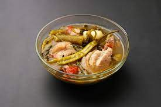
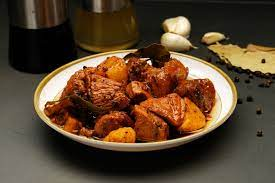

Embark on a delightful journey through Filipino cuisine, where we explore the unique flavors of the Philippines.
Popular Dishes
Discover some of the most beloved Filipino dishes:
- Sinigang 
- Adobo 
-
Kare-Kare

Recipes
Try your hand at creating these delectable Filipino dishes at home:
| Dish | Ingredients | Instructions |
|---|---|---|
| Sinigang | Tamarind Soup Base, Pork Ribs, Vegetables | Boil pork ribs in tamarind soup, add vegetables. Simmer until pork is tender. |
| Adobo | Chicken or Pork, Soy Sauce, Vinegar, Garlic | Marinate meat in soy sauce, vinegar, and garlic. Simmer until tender and flavorful. |
| Kare-Kare | Oxtail, Tripe, Peanut Sauce, Vegetables | Cook oxtail and tripe, add peanut sauce and vegetables. Simmer until rich and creamy. |
Survey
Share your thoughts about Filipino cuisine by participating in our survey: